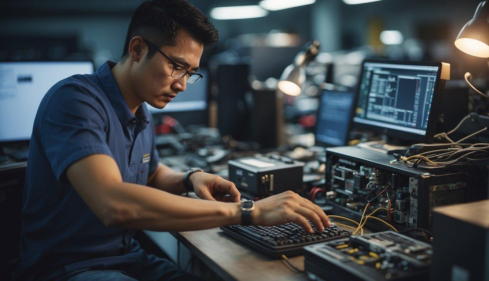

Our Services
NovaTech Computer Solutions provides a range of IT services designed to support students, home users, schools and small businesses.

Computer and Laptop Repairs
We diagnose and repair common hardware and software problems, including slow performance, startup problems and damaged components.
Software Installation
We assist customers with installing operating systems, productivity software and other essential applications.
Networking Solutions
NovaTech provides basic networking support for homes and small businesses, including network setup and connectivity assistance.
Virus and Malware Removal
We help customers identify and remove harmful software that may affect the performance and security of their computers.
Data Backup
We assist customers with backing up important documents and files to reduce the risk of data loss.
General IT Support
Our general IT support service assists customers with everyday technical problems, device setup and basic troubleshooting.
Need Technical Assistance?
Use the Enquiry page to request more information about a service or to ask for a quotation.